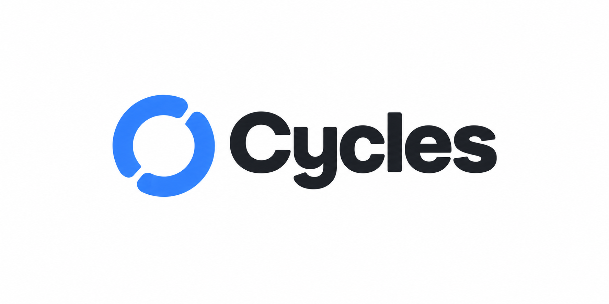

| Evento | Título | Texto | Al tocarlo abre |
|---|---|---|---|
| Plan nuevo asignado | Plan nuevo | «{Coach} te asignó {Plan}. Ya puedes verlo.» | El plan |
| Sesión nueva en un plan que ya tienes | Sesión nueva | «Hay una sesión nueva en {Plan}: {Rutina}.» | La sesión |
| Cambio en una sesión ya asignada | Cambió tu sesión | «{Coach} ajustó {Rutina} del {día}. Revísala antes de entrenar.» | La sesión |
| Varios cambios seguidos (agrupado) | Cambios en {Plan} | «{Coach} hizo {n} ajustes. Revísalos antes de entrenar.» | El plan |
| Estado | Texto |
|---|---|
| Sin avisos | Todo al día. «Cuando tu coach cambie algo en tu plan, lo verás aquí.» |
| No cargó | No pudimos cargar tus avisos. «Revisa tu conexión e inténtalo de nuevo.» Botón: «Reintentar» |
| Acción de lista | «Marcar todo como leído» |
| Pie de lista (solo si hay más de 20) | «Mostrando los últimos 20 avisos.» |
| Etiqueta para lectores de pantalla | «Avisos, 3 sin leer» · «Avisos, ninguno sin leer» |
| Regla | Decisión |
|---|---|
| Espera antes de avisar | El aviso sale cuando pasan 10 minutos sin cambios en ese plan. Así no llega uno por cada ejercicio que el coach agrega al armar. |
| Agrupar | Si hay un aviso del mismo plan y tipo sin leer, no se crea otro: se actualiza el texto y la hora («Cambios en {Plan}», con el número). Si ya lo leíste, el siguiente cambio crea uno nuevo. |
| Plan vacío | No se avisa. El aviso «Plan nuevo» sale cuando el plan tiene al menos una sesión con ejercicios. |
| Coach en pantalla | El coach no hace ningún paso extra: no hay botón «Avisar ahora» ni pregunta de confirmación; el aviso es directo y sale solo al pasar la espera. |
| Cambios que no avisan | Sesiones ya completadas, omitidas o con series registradas; renombrar el plan; ajustes del coach sobre otros atletas. |
| Datos de salud (R7) | Nunca llevan cargas, esfuerzo, dolor, notas ni peso corporal. Solo nombres de coach, plan y rutina, y el día. |
| Cuánto se guardan | 30 días y un máximo de 50 por atleta. La lista muestra los 20 más recientes. |
| Evento | Título | Texto | Al tocarlo abre |
|---|---|---|---|
| El atleta programa una sesión | Sesión programada | «{Atleta} programó {Rutina} para el {día}.» | El plan, en esa sesión |
| El atleta programa varias seguidas (agrupado) | Sesión programada | «{Atleta} programó {n} sesiones en {Plan}.» | El plan |
| El atleta registra una sesión completa | Sesión completada | «{Atleta} completó {Rutina}.» | El registro de la sesión |
| El atleta registra una parte | Completó una parte | «{Atleta} completó una parte de {Rutina}.» | El registro de la sesión |
| El atleta no pudo entrenar | Sesión omitida | «{Atleta} no pudo entrenar {Rutina}. Quedó como omitida.» | El registro de la sesión |
| Varios registros seguidos sin leer (agrupado) | Sesiones registradas | «{Atleta} registró {n} sesiones.» | El resumen del atleta |
| Estado | Texto |
|---|---|
| Sin avisos | Todo al día. «Cuando tus atletas programen o registren una sesión, lo verás aquí.» |
| No cargó | No pudimos cargar tus avisos. «Revisa tu conexión e inténtalo de nuevo.» Botón: «Reintentar» |
| Acción de lista y pie | Igual que en el atleta: «Marcar todo como leído» y «Mostrando los últimos 20 avisos.» |
| Regla | Decisión |
|---|---|
| Programar | Misma espera que en el atleta: el aviso sale cuando pasan 10 minutos sin que el atleta programe otra. Así, asignar los días de la semana entera es un solo aviso. |
| Registrar | El aviso sale al cerrar la sesión (cuando el atleta guarda cómo le fue), no por cada serie. Sin espera. |
| Agrupar | Si hay un aviso del mismo atleta y tipo sin leer, se actualiza (número y hora) en vez de crear otro. Si ya estaba leído, se crea uno nuevo. |
| Reabrir y volver a cerrar | Reabrir una sesión no avisa. Al cerrarla otra vez se actualiza el aviso de esa sesión, no se duplica. |
| Reprogramar | Mover una sesión a otro día cuenta como programar; se avisa una vez, con el día nuevo. |
| De quién | Solo de atletas con relación activa con ese coach. |
| Datos de salud (R7) | Los avisos dicen qué pasó (completada, parte, omitida), nunca esfuerzo, dolor, notas, cargas ni peso corporal. Eso se ve al abrir el registro. El dolor reportado sigue en «Necesitan atención» del Inicio. |
| Aviso frente a «Necesitan atención» | «Necesitan atención» es lo que el coach debe resolver; los avisos son lo que pasó. No se repiten entre sí. |
| Cuánto se guardan | 30 días y un máximo de 50 por coach. La lista muestra los 20 más recientes. |